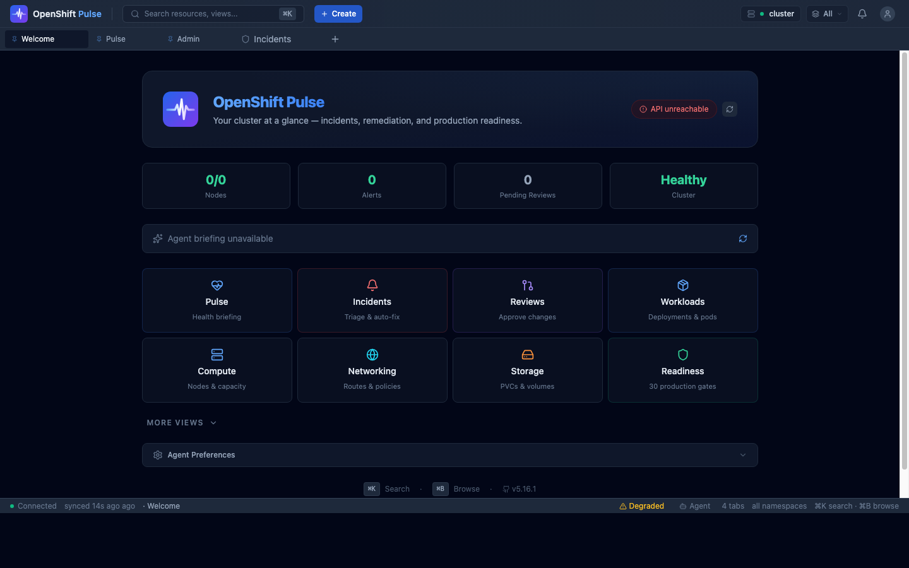
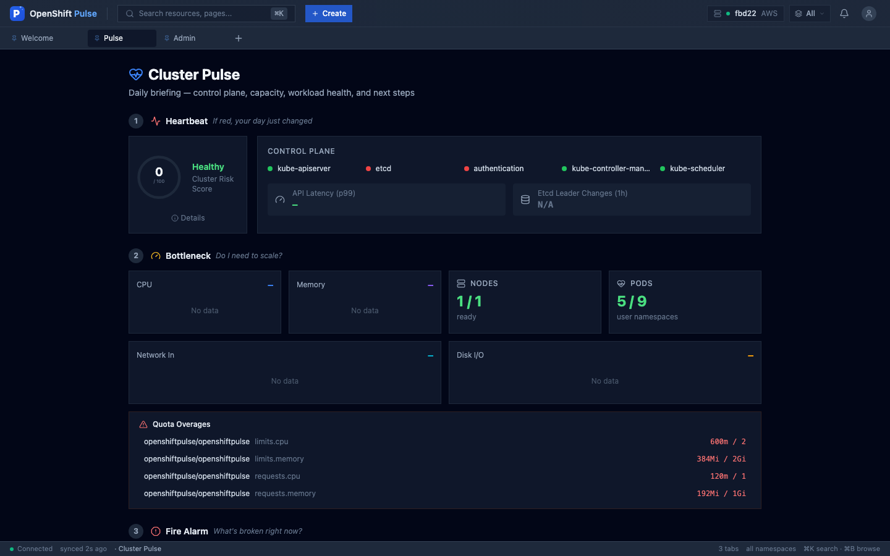
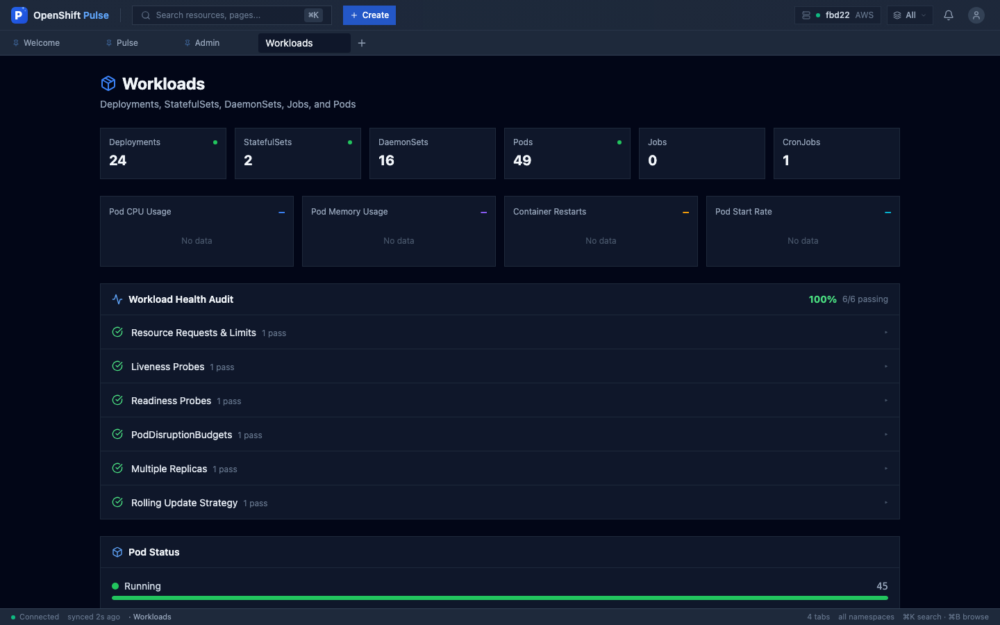
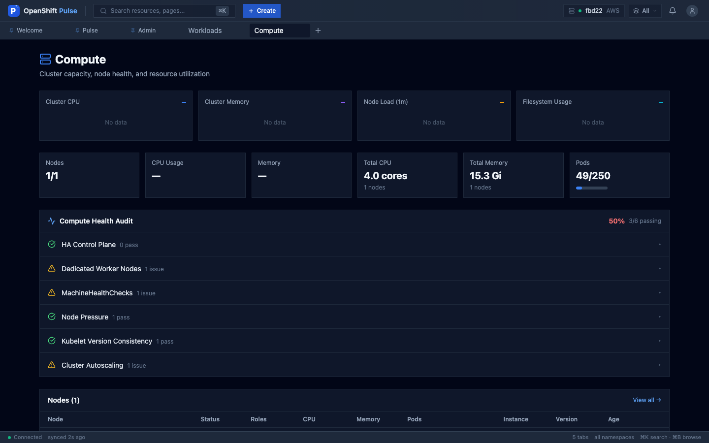
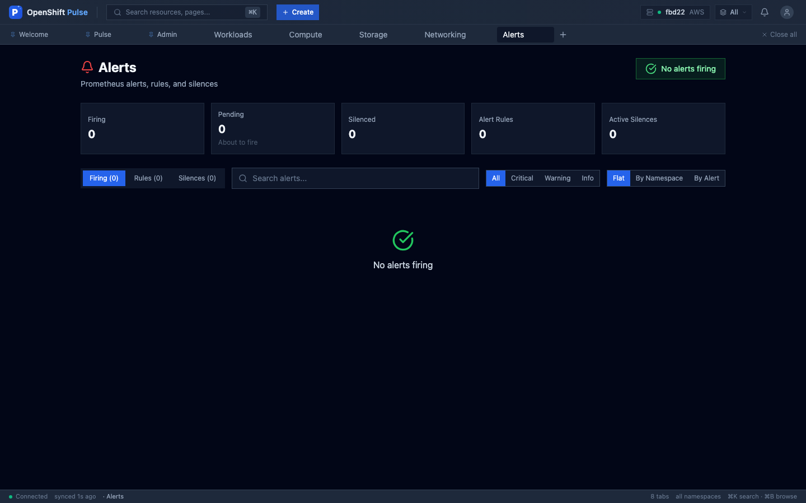
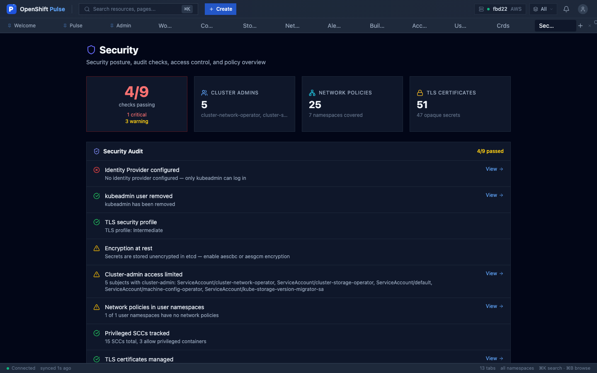
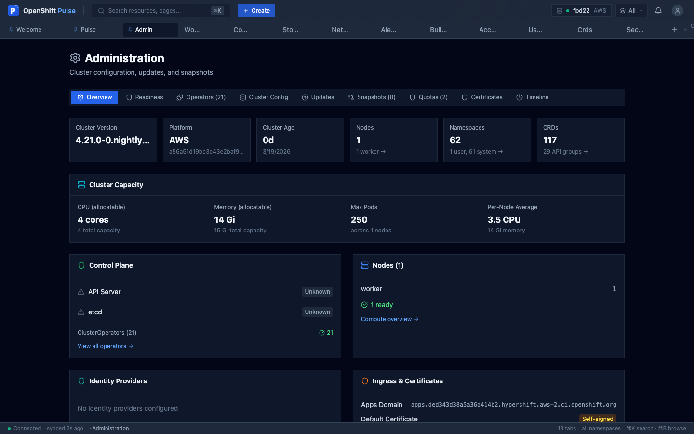

OPENSHIFT PULSE
v5.20.0 // OPERATIONAL
AI-powered platform operations. Built for the engineer who checks their cluster at 0800 Monday.
AI-powered platform operations. Built for the engineer who checks their cluster at 0800 Monday.
Full-spectrum cluster operations. Zero external dependencies.
Claude-powered diagnostics. 112 tools, 10 component types, auto-detection, streaming chat, confirmation gates. Runs 24/7 in your cluster.
Natural language in Cmd+K. Type a question, get real answers with action buttons. Dedicated WebSocket, 8s timeout.
Consolidated agent hub at /agent. Settings, Memory, and Views tabs. Custom views auto-save to PostgreSQL.
Unified triage: Now, Investigate, Actions (merged Review Queue), History. AI investigation, auto-fix with verification, correlation groups.
Interactive world map with drill-down. Cross-cluster search, compliance matrix, config drift detection. ACM/MCE auto-detect.
30 gates, 6 categories. Wizard + checklist modes. Waivers, continuous re-checks, blocking gates for critical paths.
AI overnight summary. Agent actions, incidents, current cluster state. The 30-second standup replacement.
WebSocket watches + 60s fallback. Instant updates for every resource. TanStack Query caching. Zero stale data.
CodeMirror with K8s autocomplete, 71 snippets, inline diff. Server-side dry-run before applying.
Values file replaces 20+ --set flags. --atomic Helm upgrade with auto-rollback. Startup probes on all containers. Deploy history log.
ServiceMonitor + 4 PrometheusRules: UIDown, AgentDown, AgentHighRestarts, PostgreSQLDown. Alerts on your alerts.
14 Helm chart tests run in CI without a cluster. 88 new scanner unit tests. E2E tests now run on every PR.
Dark theme. Terminal-native. Zero eye strain.










OAuth proxy. Zero external DB. Just deploy and go.
| FRAMEWORK | React 19 + TypeScript 5.9 |
| BUNDLER | Rspack (Rust-based, ~1s production builds) |
| STATE | Zustand + TanStack Query |
| STYLING | Tailwind CSS + Radix UI |
| AI BACKEND | Claude via Vertex AI / Anthropic API |
| SECURITY | Red Hat UBI images, 0 CVEs, OAuth SSO |
Operational in 30 seconds.
Deploy on any OpenShift 4.x cluster. ROSA, ARO, self-managed, HyperShift.